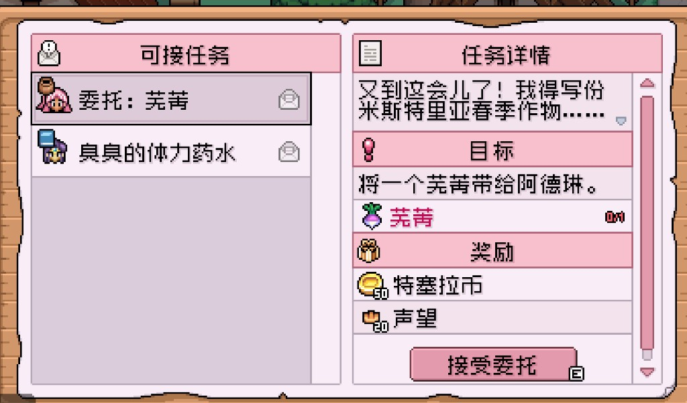

Quick answers
- Buy seeds for this week’s waterable tiles only.
- Mix fast crops with one longer plant if you like variety.
- Keep quest crops until you check the board.
- Do not restart over a “wrong” seed choice.
- Summer planning starts by protecting a seed buffer late spring.
How we bought seeds
General store trips after harvest money arrived. We skipped filling the backpack with every spring type. Turnips and potatoes showed up early on our file—treat names as examples, confirm stock in your shop.
Keep before sell
If Adeline or a board quest wants a crop, park one in a chest. Duplicates can ship.
Safe to skip
- Optimizing for max gold per day one
- Buying out the seed rack “for the wiki”
Screenshots from our save
Real Fields of Mistria shots from our first-season play. Captions in English; in-game UI language may differ.



FAQ
Best spring crop?
The one you will water. Efficiency guides can wait.
Out of season plants?
They die—clear and replant when the season flips.
Unofficial fan guide. Not affiliated with NPC Studio. Verify details in your game version.